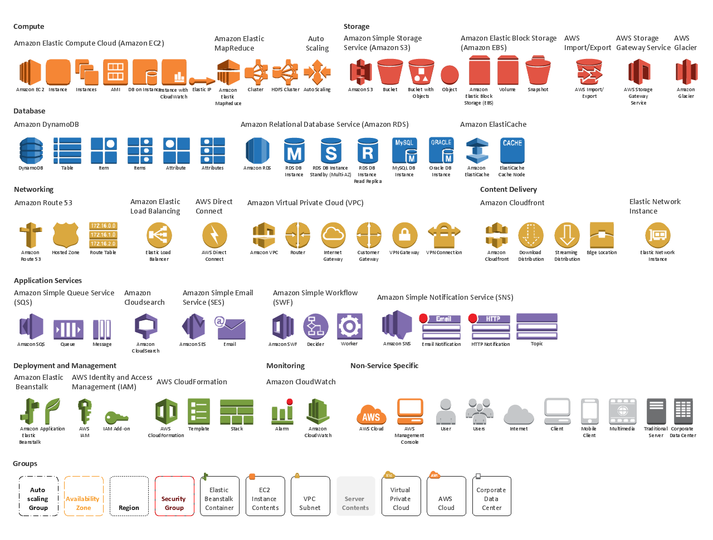

Basic Cloud Workshop
Maciej Nowak
30-08-2018
What will you learn
- Continuous Deployment
- What is travis
- How to dockerize your app
- What is AWS
- How to deploy to AWS
- How to automate deployment to AWS
Travis CI
Free for open source
Let’s you build, test and deploy your software
For github public repos
Not only java
Travis CI
Log in with github account at http://travis-ci.org/
Travis CI
Add .travis.yml
language: java
jdk:
- oraclejdk8
Travis CI
Add badge
[![Build Status]
(https://travis-ci.com/macnowak/basic-cloud-workshop.svg?branch=master)]
(https://travis-ci.com/macnowak/basic-cloud-workshop)}Code coverage
Log with github account at https://codecov.io/
Code coverage
Add to build.gradle
apply plugin: "jacoco"
...
// Code coverage section :
jacocoTestReport {
reports {
xml.enabled true
html.enabled true
}
}
check.dependsOn jacocoTestReport
Code coverage
Add to .travis.yml
after_success:
- bash <(curl -s https://codecov.io/bash)
Code coverage
Add badge
[![codecov]
(https://codecov.io/gh/macnowak/basic-cloud-workshop/branch/master/graph/badge.svg)]
(https://codecov.io/gh/macnowak/basic-cloud-workshop)
Docker
Add Dockerfile
FROM openjdk:8-jdk-alpine
VOLUME /tmp
ARG JAR_FILE
ADD ${JAR_FILE} basic-cloud-workshop-app.jar
#java.security.egd=file:/dev/./urandom -> https://wiki.apache.org/tomcat/HowTo/FasterStartUp#Entropy_Source
ENTRYPOINT ["java","-Djava.security.egd=file:/dev/./urandom","-jar","/basic-cloud-workshop-app.jar"]
Docker
Add to build.gradle
repositories {
maven { url "https://plugins.gradle.org/m2/" }
}
...
dependencies {
classpath("gradle.plugin.com.palantir.gradle.docker:gradle-docker:0.19.2")
}
...
apply plugin: 'com.palantir.docker'
...
docker {
name "macnowak/basic-cloud-workshop-app" //image name
dockerfile file('./docker/app') //path to dockerfile
files jar.archivePath //path to jar file
buildArgs(['JAR_FILE': "${jar.archiveName}"])
}
Docker
Create image
$ ./gradlew docker
Docker
Push to hub.docker
$ ./gradlew docker
Docker
Add to .travis.yml
sudo: required # super power
...
services:
- docker # we will be using docker features
...
deploy:
provider: script
script: bash docker_push.sh
skip_cleanup: true
on:
branch: master
Docker
Add docker_push.sh
#!/bin/bash
docker login -u "$DOCKER_USER" -p "$DOCKER_PASS";
./gradlew dockerPush
AWS
Since 2006
Providing infrastructure for Amazon
Gartners no. 1 IaaS
AWS

AWS
AWS - EC2
https://aws.amazon.com/ec2/instance-types/AWS - EC2
| Model | CPU | Mem (GB) | Storage (GB) |
| t1.micro | 2 | 6 Credits / hour |
0.5 |
| x1e.32xlarge | 128 | 3,904 | 2 x 1,920 |
AWS - Elastic Beanstalk
Service for deploying and scaling web applications
Elastic Beanstalk automatically handles the deployment
Automatically scales your application up and down based on your application's specific need
Capacity provisioning, load balancing, auto-scaling to application health monitoring
Deploy app to AWS
Add to .travis.yml
deploy:
provider: elasticbeanstalk
access_key_id: $AWS_ACCESS_KEY_ID
secret_access_key: $AWS_SECRET_ACCESS_KEY
region: us-west-2
app: basic-cloud-workshop-dev1
env: BasicCloudWorkshopDev1-env
bucket_name: elasticbeanstalk-us-west-2-693568640595
zip_file: './build/libs/basic-cloud-workshop-app-0.0.1-SNAPSHOT.jar'
skip_cleanup: true